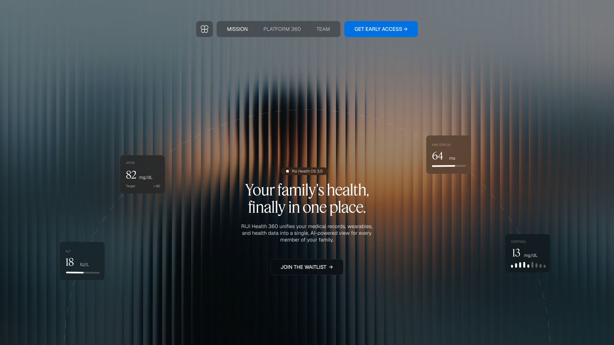
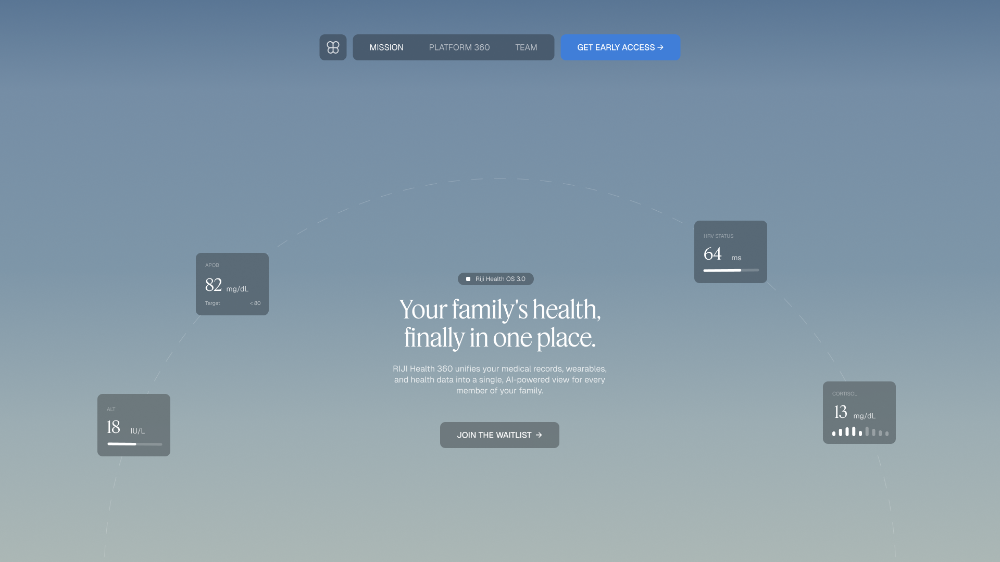
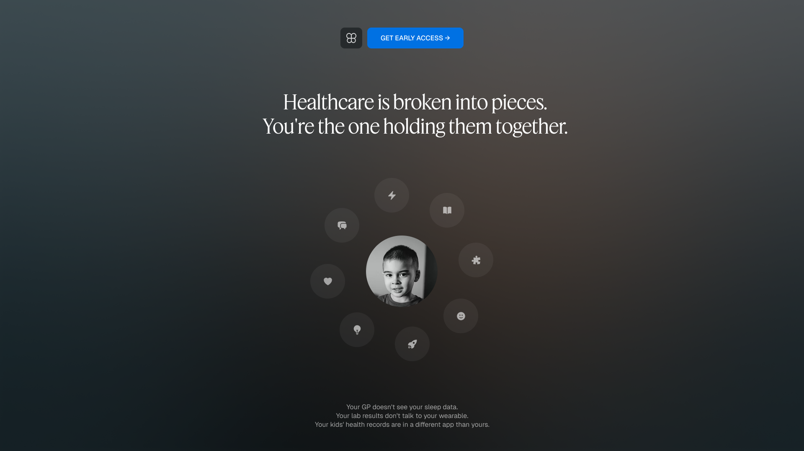
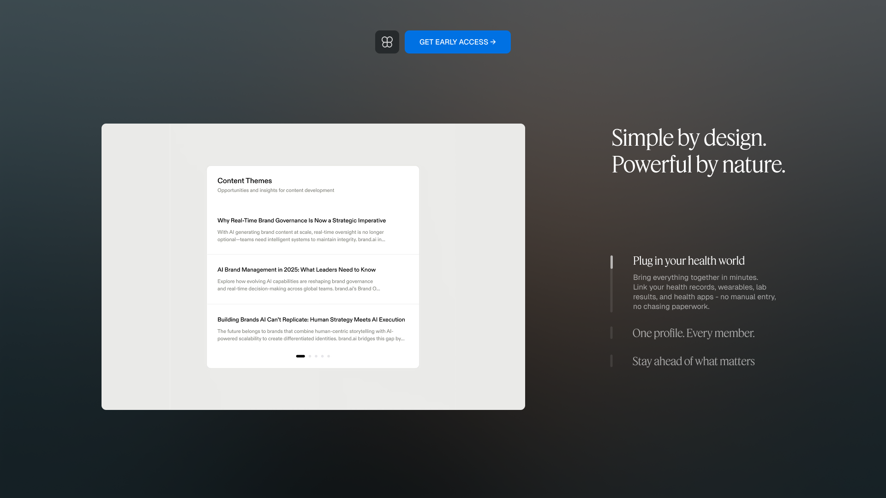
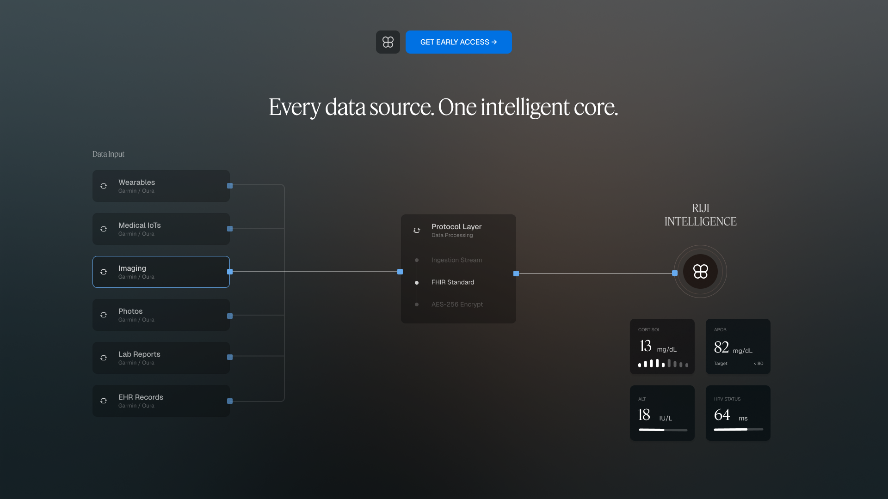
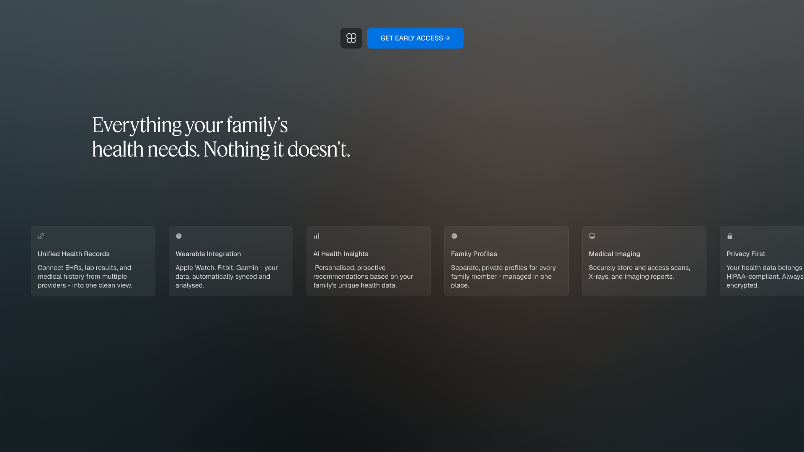
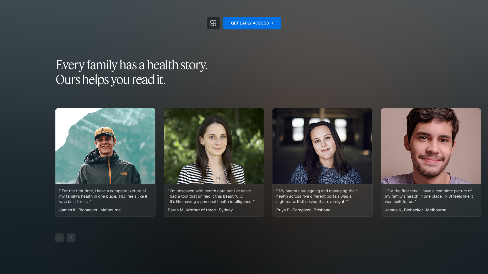
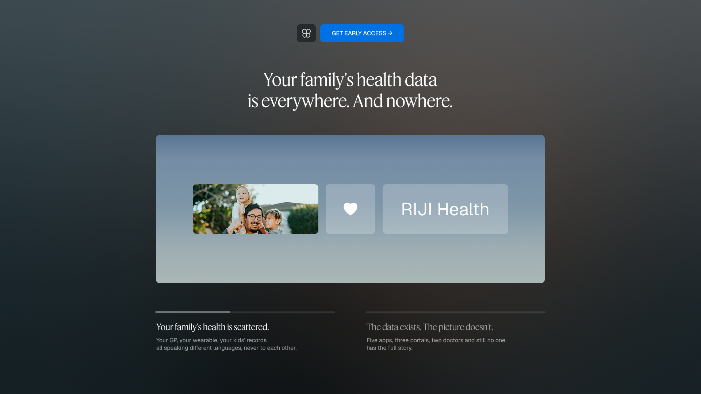

A concept exploration for a healthcare platform designed around a simple idea:
Healthcare data shouldn’t live in fragments.
Today, medical records, prescriptions, lab reports, appointments, and care providers exist across disconnected systems. The result is a healthcare experience that feels reactive, fragmented, and difficult to navigate.
This exploration investigates what a calmer, more connected healthcare experience could look like when information, care, and context are brought together in one place.

One Place For Everything
Managing family health often means juggling multiple providers, documents, and services.
The concept focuses on creating a unified experience where critical information remains accessible, organized, and easy to understand.

Designed Around Real Needs
Rather than overwhelming users with complexity, the platform prioritizes the essentials.
Appointments, medical records, prescriptions, insurance information, and family health insights are surfaced through a simplified interface designed to reduce cognitive load.

Simplicity As A Feature
Healthcare products frequently suffer from dense interfaces and administrative complexity.
This exploration leans in the opposite direction—clean layouts, generous spacing, and focused interactions that help information feel approachable rather than overwhelming.

Connecting The Dots
The platform is built around a central intelligence layer that brings together information from multiple healthcare sources.
Instead of forcing users to navigate separate systems, data flows into a single, connected view.

Making Information Useful
Access alone isn’t enough.
The goal is to transform scattered healthcare information into meaningful context that helps families make informed decisions about their care.

Behind Every Record Is A Person
Healthcare is ultimately about people.
Stories, experiences, and long-term health journeys are as important as the data itself. The platform aims to make those journeys easier to understand and manage.

A More Complete Picture
RIJI Health explores how thoughtful product design can make healthcare feel more connected, understandable, and human.
While conceptual, the project serves as an exploration of information architecture, visual systems, and interaction design within a complex domain.
